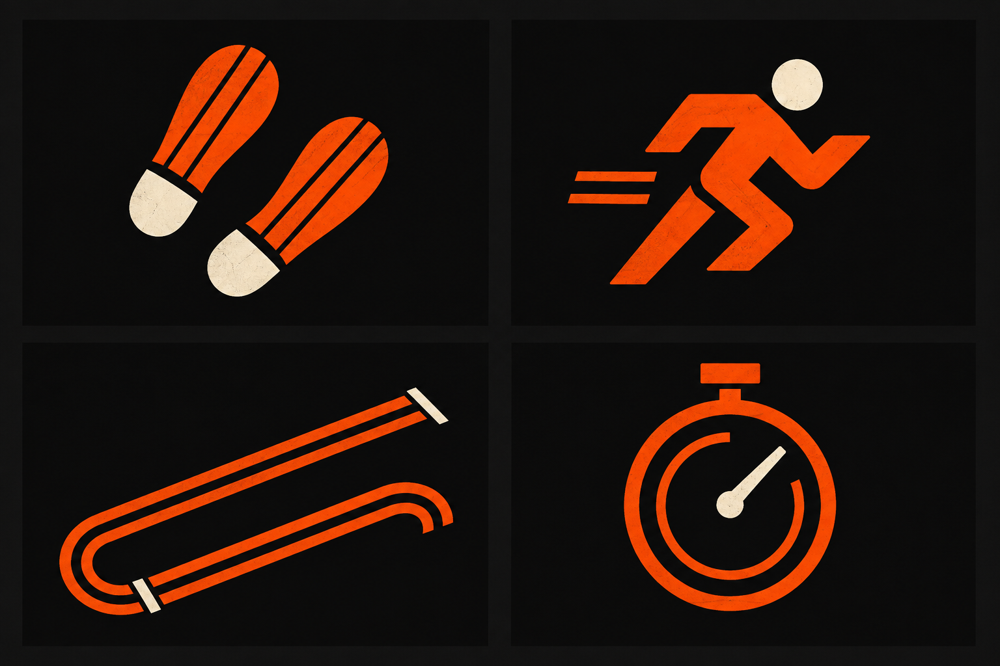
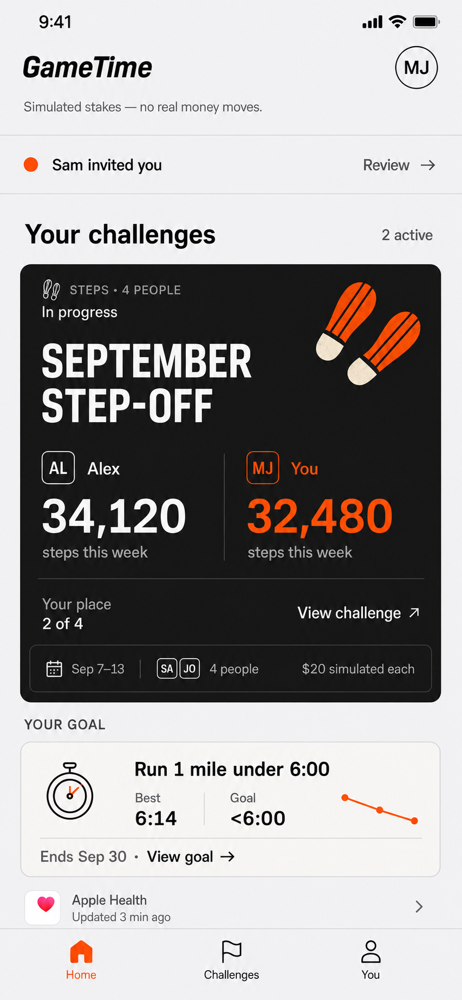

Steps
Separated heels; two offset soles.
24 pxSVG
The next layer of Matchday
Give GameTime a recognizable family of marks: paired soles, open routes, timing dials, and finish gates.
A shared geometry connects the small icons to the event artwork. Familiar native controls keep the app easy to navigate.

01 / Small and functional
Original SVG concepts. Rounded bends, open counters, consistent weight. The labels carry meaning; the icons help people scan.
Separated heels; two offset soles.
A moving figure; always paired with its label.
An open route with distinct endpoints.
A timing dial with a lane inside.
Separate goal flags; people keep their own targets.
Shared baseline; no target or completion ring.
One flag and a short approach lane.
A personal note with an explicit plus.
A legible document; a quieter supporting icon.
Calendar binding and two start marks.
Open arcs and a neutral center; never a loss mark.
A clear check within a finish gate.
24 × 24 viewBox · 1.75-unit stroke · rounded joins · shared optical scale. Keep back, close, help, tab navigation, and the Apple Health mark native. These are proposed content icons; their meaning needs a human comprehension check.
02 / In context
The new artwork replaces the decorative corner lanes. Monogram tiles and the timing icon repeat the same compact geometry.


03 / Supporting visual details
Simple stamps accompany explicit status text. A finish mark appears only after the athletic result is confirmed.
SCHEDULED
September step-off
Starting lanes establish the event without suggesting it has begun.
ACTIVITY UPDATE
Your result isn't ready yet.
Open arcs keep this neutral while data is missing.
FINAL RESULT
Your goal: run 1 mile under 6:00.
24-point icons in labeled rows. Larger artwork on the featured event. A single stamp beside its status. Initials remain identity markers; the border carries no progress meaning.
State cards are isolated fictional examples, not one timeline or new reward mechanics. Native state rendering must follow the actual result and review rules. No app code or agreements changed.
04 / Mobbin references
Borrow the discipline: distinctive silhouettes, consistent small symbols, and artwork that explains the current situation.
One bold silhouette makes a visual object memorable. Transfer that clarity to metric artwork and confirmed goal stamps.
The illustration belongs to a specific situation. GameTime uses athletic objects and clear state labels.
Small repeated symbols tie rows to their event. Transfer that consistency to the four activity metrics.
Also inspected: Oddible’s published custom icon system, whose common stroke treatment gives many functions a family resemblance; and Ladder’s milestone badges. The GameTime drawings are original. No competitor icon files are included.
Refinement preference
My recommendation is the complete family, with the artwork confined to the featured event.
Choosing stays local. Queue the preference, then use Lavish’s Send control when ready.
{kind=link}
{kind=link}
{kind=link}
{kind=link}
{kind=link}
{kind=link}
{kind=link}
{kind=link}
{kind=link}
{kind=link}
{kind=link}
{kind=link}